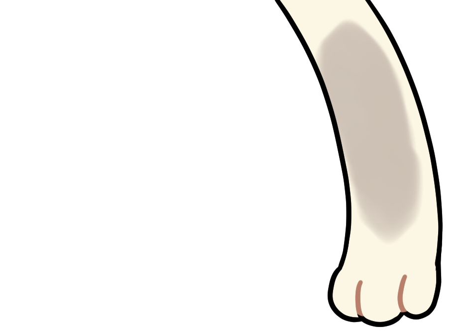
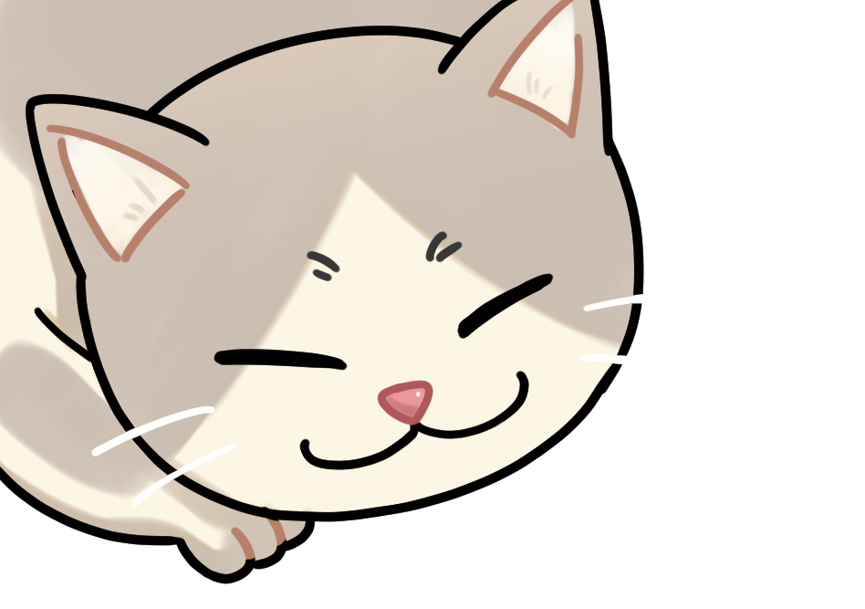
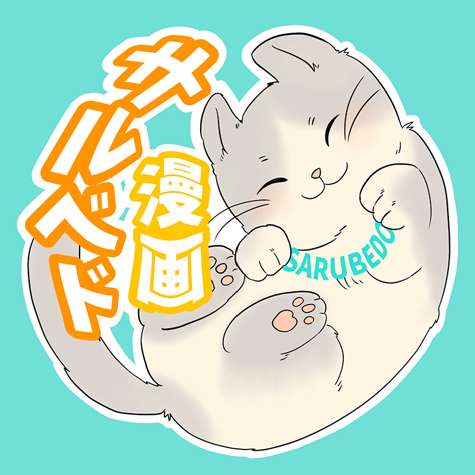
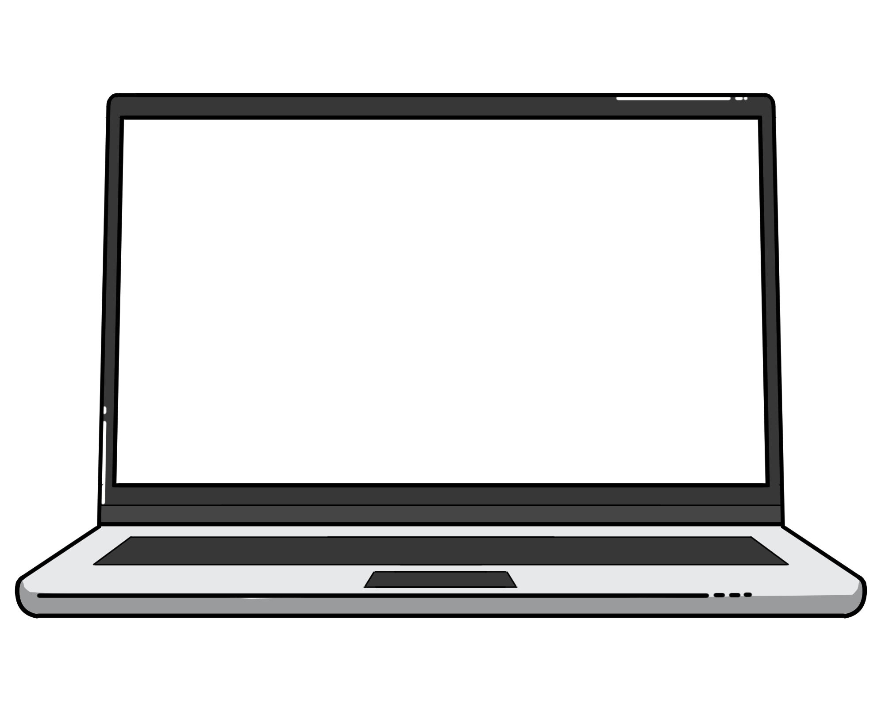
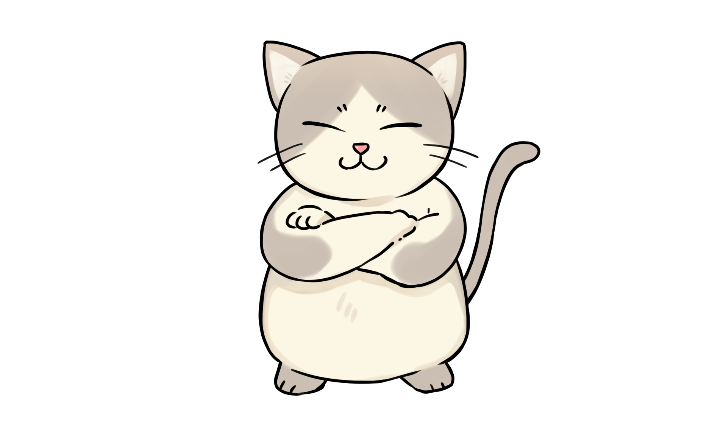

SERIES
読みに行く
サルベド漫画とは
オリジナルラブコメ漫画動画を配信するYouTubeチャンネル
「感情が動く、気分が上がるオリジナル漫画をあなたにお届けしたい！」をモットーに
コンテンツを作り続けています
現在4つのチャンネルを運営しております
サルベド漫画Emotional
本家よりもしっとりとした、重いストーリーが中心。伏線あり、感動ありだが、時折コメディもしっかり忘れないのはサルベドクオリティ。
サルベド漫画Fantasy
異世界、魔法、タイムリープにドラゴン…現実じゃありえない舞台を中心に繰り広げられるサルベドワールド。
死神少女
寿命と引き換えに願いを叶える力を持つ死神少女。サブチャンネルの中で最も重いストーリーが展開される。



サルベド漫画とは
オリジナルラブコメ漫画動画を配信するYouTubeチャンネル
「感情が動く、気分が上がるオリジナル漫画をあなたにお届けしたい！」をモットーに
コンテンツを作り続けています
現在4つのチャンネルを運営しております
CONTENTSコンテンツ

NEWSお知らせ
- 2026.06.20ブログモノクロ2ページ漫画「白黒漫画」を公開しました（5作品）
- 2026.06.19ブログ青春詭弁さんの小説「俺がハーレムを全力で阻止する！」を公開しました
- 2026.06.06ブログ恋愛漫画「毎日身体が入れ替わる幼馴染と俺」を公開しました
死神少女